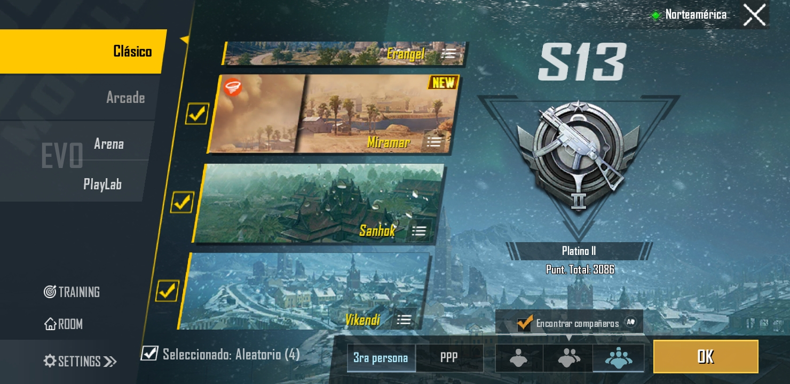
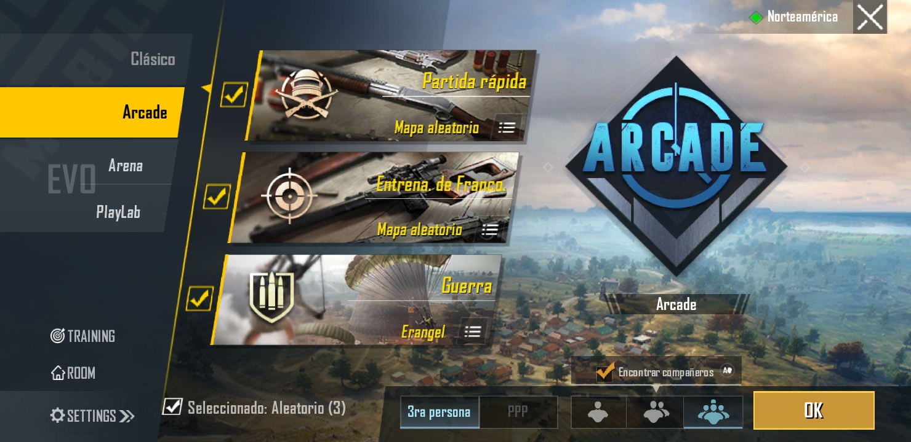
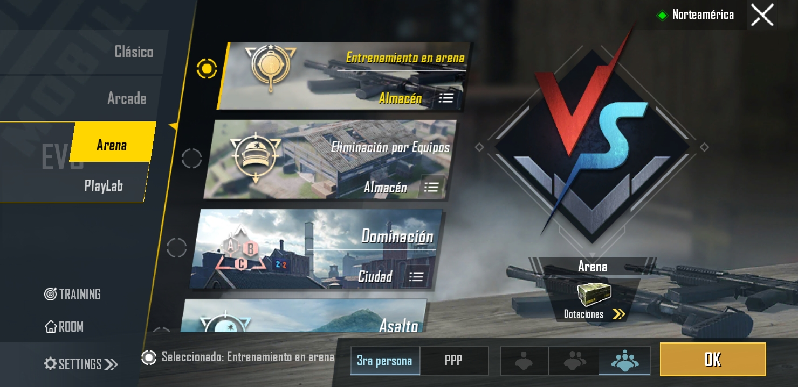
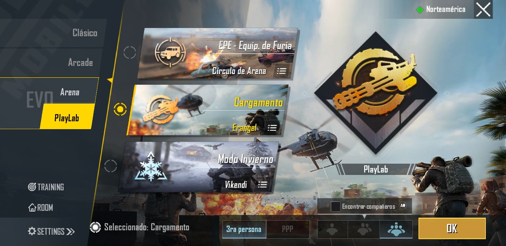

PUBG MOBILE
|  |
MODO CLÁSICO
El modo clásico consta de 4 mapas:
- Erangel
- Miramar
- Sanhok
- Vikendy
Cada uno con diferente temática y modalidad, en especial te recomiendo jugar Erangel , ya que es el mapa más competitivo del juego. |
|  |
MODO ARCADE
El modo arcade consta de 3 modalidades:
- Partida rápida
- Entrenamiento de Franco
- Guerra
El modo arcade es un modo para divertirte con tus amigos fuera de alguna competitividad, podemos decir que son partidas amistosas, donde no es precisante ganar. |
|  |
MODO ARENA
El modo arena consta de 4 modalidades:
- Entrenamiento en arena
- Eliminación por equipos
- Dominación
- Asalto
El modo arena es un modo de combate 4 vs 4, en el que el equipo que llega a 40 bajas primero gana, es el mejor modo para entrenar para los enfretamientos cercanos, sin embargo, te recomiendo no usar la acción de deslizarte, ya que en un modo clásico no contarás con esta acción. |
|  |
MODO PLAYLAB
El modo playlab consta de 3 modalidades:
- Epe- Equip. de Furia
- Modo Invierno
- Cargamento
El modo Playlab es un modo que se puede jugar en equipo, duo o individual, cada mapa con distinta modalidad, este modo esta fuera del ranked, te recomiendo no jugar estos modos por mucho tiempo, ya que no hay buen nivel. |
|